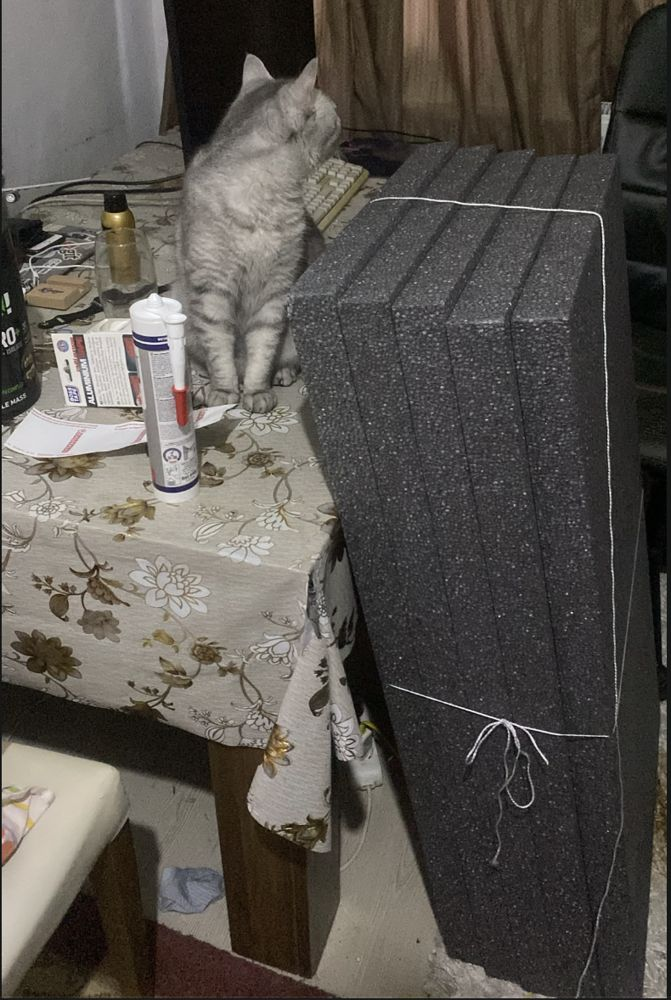
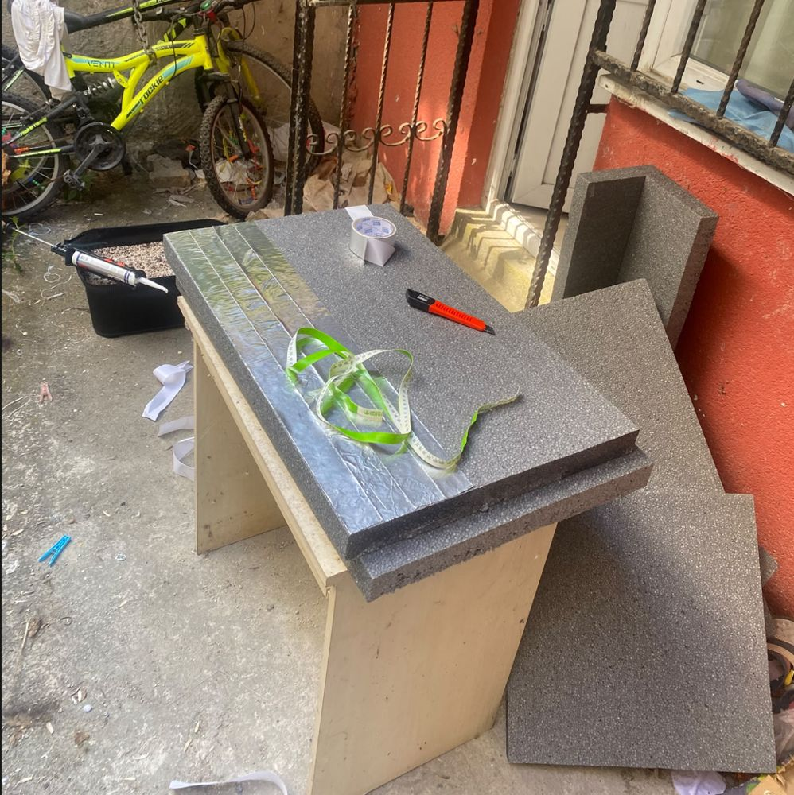
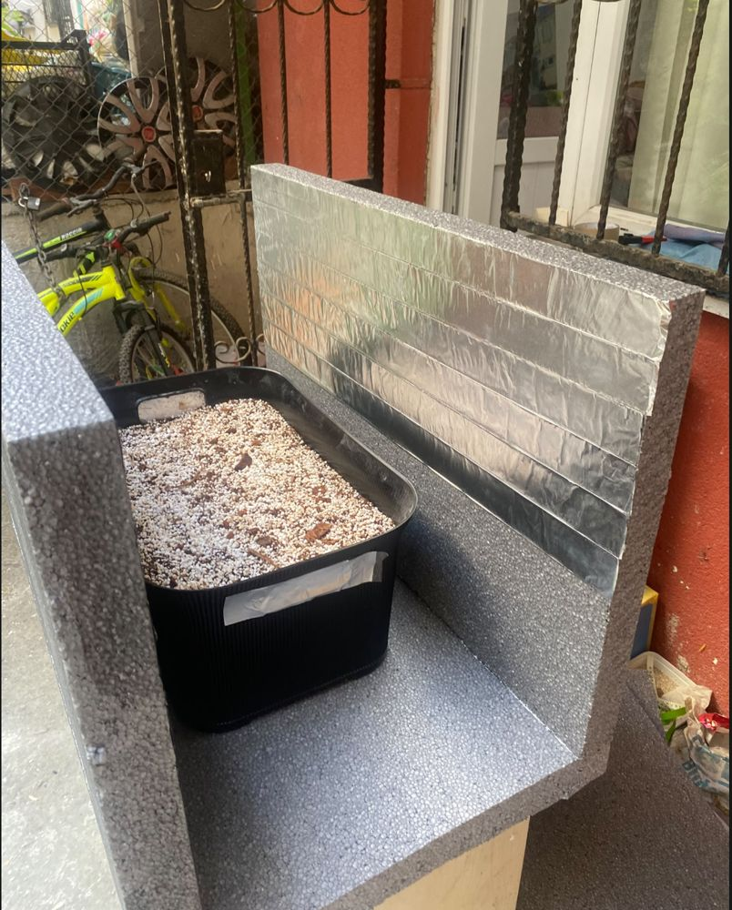
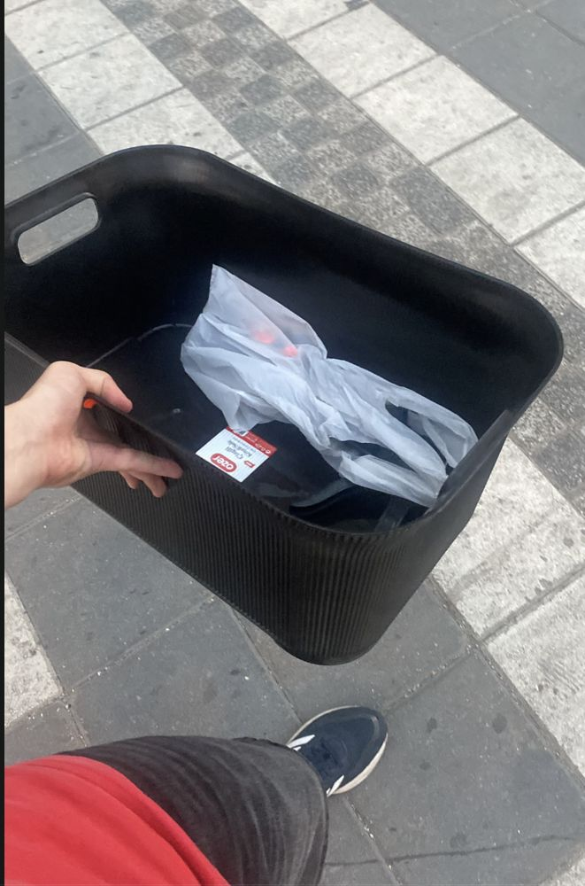
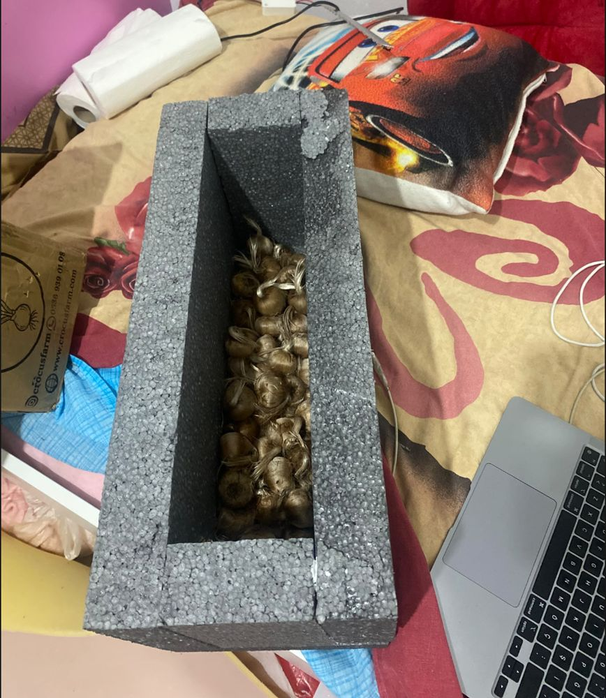
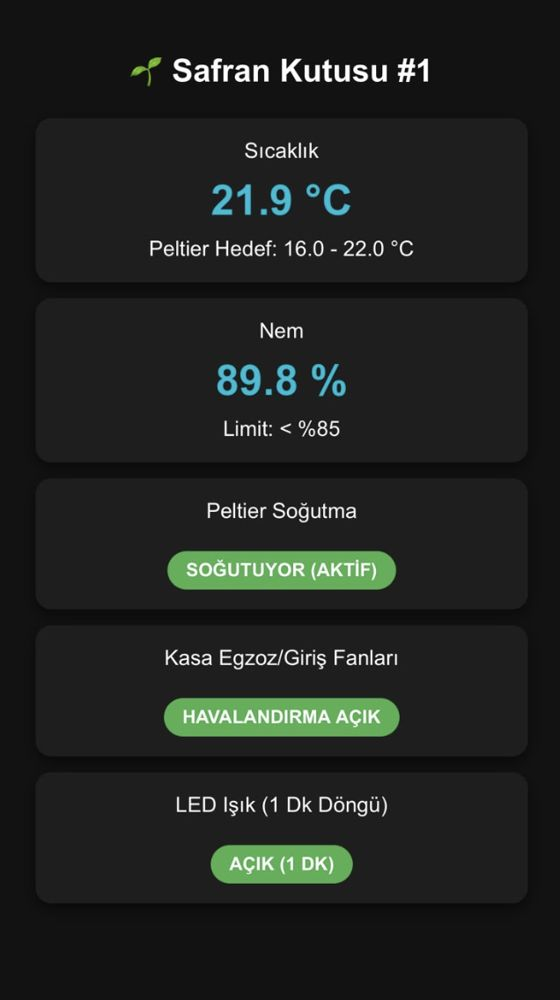
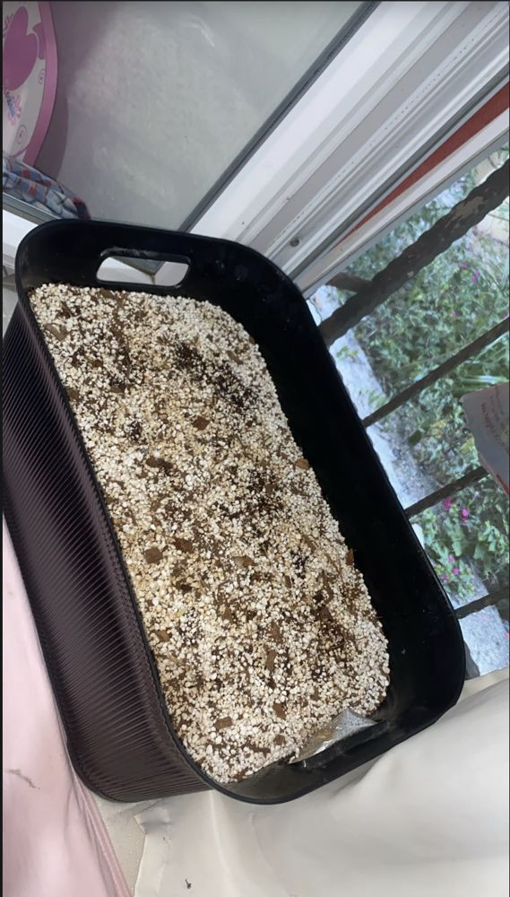
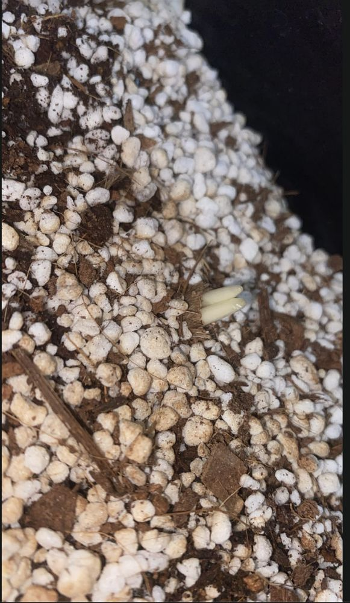
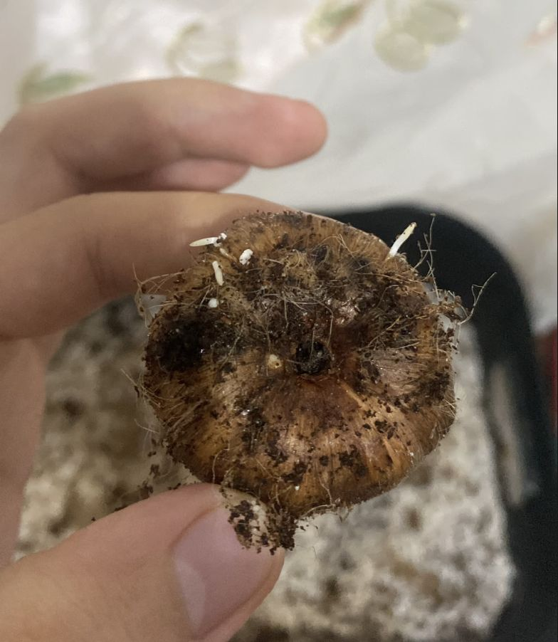
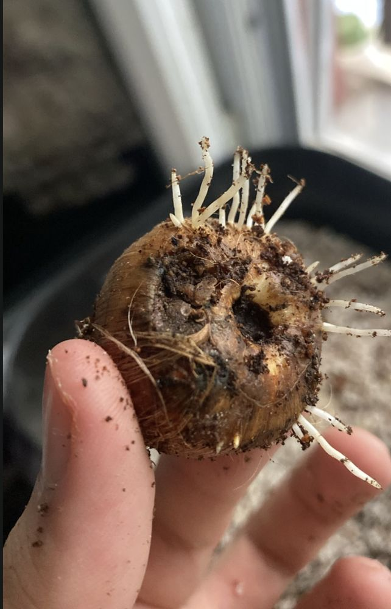

Son güncelleme: 20 Eylül 2026. Bu sayfada ilk 18 kormun ekimden itibaren başına gelenleri tarih sırasıyla tutuyorum. Fotoğraflar telefonla çekilmiş, amatör çekimlerdir; daha düzgünleri ileride eklenecek.
Kısa özet
| Tarih | Gün | Olay |
|---|---|---|
| 20 Ağu | 0 | Ekim: 18 korm, 3 × 6, 5 cm derinlik. Hava yaklaşık 30 °C. |
| 22 Ağu | 2 | Kutu dört duvarıyla tamamlandı, Peltier deliği açıldı. |
| 13 Eyl | 24 | İlk kökler. Kutu 20–22 °C'ye inebildi. |
| 18 Eyl | 29 | İlk yeşil sürgün. |
| 20 Eyl | 31 | 18 kormun 16'sında sürgün var. Işık açılıyor. |
Hazırlık ve kutu yapımı
Kutuyu 5 cm karbonlu straforlardan kendim kestim ve yapıştırdım. Levhaları solventsiz strafor yapıştırıcısıyla birleştirdim, kuruyana kadar kaymasınlar diye birleşim yerlerine çöp şiş sapladım. İç yüzeyin tamamını parlak alüminyum bantla kapladım. Ekim teknesi 50 × 30 × 20 cm; tabanında köşelerde, kenar ortalarında ve merkezde olmak üzere 8 drenaj deliği var.




20 Ağustos: ekim
İlk 18 kormu %70 iri perlit, %15 koko yonga ve %15 yıkanmış kokopitten kendi hazırladığım karışıma, 3 × 6 düzeninde ve 5 cm derinliğe ektim. Kormun altında kökler için yaklaşık 8 cm karışım kaldı. Ekimden önce soğuk şok uygulamadım. İlk sulamayı ekimde yaptım, sonra haftada bir; çürüme olmasın diye tüm tekneye yalnızca yaklaşık yarım litre musluk suyu veriyorum, gübre yok. Kalan kormlardan 60'ı sürgün vermesin diye uyku kutusunda 25 °C'nin üstünde bekliyor. 20 kormun dış kabuğunu ve tabanını soymuştum; görünümleri bozulduğu için onları ekmedim.

Ağustos sonu: sıcakta bekleme
Ekim günü İstanbul'da hava yaklaşık 30 °C'ydi. Kutu 22 Ağustos'ta tamamlandı ama tek Peltier bu sıcaklıkta kutuyu hedefe indiremedi. Yaklaşık üç hafta boyunca köklenme olmadı. Aşağıdaki ekran, ilk kontrol yazılımının panelinden: kutu 21,9 °C, nem %89,8.

13 Eylül: ilk kökler
Hava serinleyince Peltier kutuyu 22 °C'ye, bazı gecelerde 20 °C'ye indirebildi. Tekneyi serin havadan yararlansın diye pencerenin önüne aldım. İlk kökler bu dönemde çıktı. Buradan çıkan ders: kök ve sürgün ancak sıcaklık 20–22 °C'ye inince başladı. Ekim zamanını kutunun gerçekten soğutabildiği döneme göre seçmek gerekiyor.

18–20 Eylül: sürgünler
18 Eylül'de ilk yeşil ikili sürgünü gördüm. 20 Eylül'de 18 kormun 16'sında sürgün ucu görünüyordu. Sürgün vermeyen iki kormu söktüm: ikisinde de kök vardı. Birinin bir yanı yumuşamıştı ve kökünün yaklaşık dörtte biri çıkmamıştı; mantar başlangıcı olabileceği için onu diğerlerinden ayırdım. Diğeri sağlam ve sertti, geri diktim.



Sıradaki adımlar
- LED'leri teknenin yaklaşık 20 cm üstüne takıp 11 saat ışık (20:00–07:00) vermek.
- Işık açıkken kutu sıcaklığını izlemek; çiçeklenme için hedef 13–17 °C.
- Yeni iki kutulu yazılımı karta yüklemek. Yazılım 30 dakikada bir o yarım saatin ortalama sıcaklık ve nemini, rölelerin de yüzde kaç açık kaldığını ESP32'nin kendi belleğine kaydediyor; ışık açıldıktan sonraki günleri grafikle buraya ekleyeceğim.
- Ayırdığım kormu izlemek.